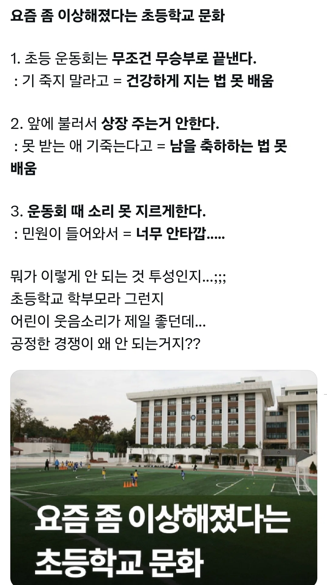
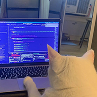

요즘 좀 이상해졌다는 초등학교 문화
댓글
승자독식문화, 승자는 무슨짓을 해도 정당화되는 문화부터 바꿔야
건강한 패배와 실패를 경험하지 못하고 자라난 아이들은 커서 대인관계에서도 자기 중심적인 사고방식과 행동을 유지할 가능성이 농후하지
https://www.dogdrip.net/697995946
해결방법
딱 20년 후면 문화쇠퇴기 도래하겠네 ㅋㅋㅋㅋㅋㅋ
애초에 저런 이유가 경쟁이 싫어서 그런게 아니라 지나치게 경쟁친화적이라 본인들 스스로 못 견뎌서 그러는거임.
판만 깔리면 미친개마냥 달려들어서 물어뜯는 습성있는 부모들 널려서 공동체 개박살내고 열등감시기질투 폭발하는 꼴을 자주 겪으니 저렇게 되는거지.
건전한 경쟁이나 건전한 실패 후 발전이 뭔지 모름.
실패하면 낙인을 찍고 재증명 기회는 오지 않고 그걸 관계주의로 집단에서 영구적인 서열로 이어지는 시대를 살던 양반들이 부모라 쩔수인거지.
ㄹㅇ 동감임. 건강한 패배란게 애초에 존재하지 않는 사회니까 패배하는것만은 무슨수를 써서라도 피하려는거지 ㅇㅇ
진짜 이 글 볼때마다 웃김 ㅋㅋ
애 둘 초등학교 다니는데, 요즘 운동회 보면
전문 레크레이션강사 불러서 얼큰하게 놀아버리던데..
승부도 나뉘고.. 상장도 다 주고, 숙제도 있고..
저런글 자꾸 올라오고 교장이나 유치원 원장이 문제의식을 누구보다 빨리 크게 느껴서 그런거임.
하지만 악성 민원에 시달리는 지역에 있다보면 얄짤없쥬?
진짜 축복받은거임.. 악성 민원인 학부모가 있는 학교는 그 학부모 하나 때문에 전교생이 고통받음....
커뮤 속 세상이 진실이 아니라고?!

조카 피아노 대회 나가서 우승했는데
교무실에서 상장 받음 ㅋ..
진짜 저러긴 하냐, 사실이라 치면 새로운 민족말살 방법이라고 본다
승리가 없으면 왜 열심히 하고 열심히 안할거면 왜함?
어차피 그것을 받아들일 사람이라면 무엇으로부터든 받아들이게 되어있고
그게 안 되는 사람은 어차피 그대로임. 인정하고 받아들이지 않는 방법은 많거든...
저 애들이 학부모가 됐을때 벌어질일이 벌써 두렵다
다 그런건 아닌게 우리는 운동회 그냥 청팀백팀 우승팀 가림
너 초등학생이야?
아니 우리아들이 ㅋㅋㅋ
코코야 아빠 말 잘 듣고 훌륭한 사람이 되렴
건강하게 지는게 뭘까.. 난 아직도 배그하다가 죽으면 개빡쳐 ㅋㅋ ㅠ
초등학교 계주때 부모님뛰게하는건 아직함?
나중 대면 경쟁사회 속 힘들다고 학교도 없애고 집에서만 교육하겟네
사진은 경복초네 ㅋㅋㅋ 추억돋네
정신 이상한 부모들이 저런 억지스러운 민원 계속 넣어서 저렇게 된듯...
난 체육대회 마지막에 박던지기가 제일 재밌었음..
몇몇 학부모가 얼마나 들쑤시고 다녔으면 저랬을까 싶기도 함
학교가 무능한거임
그래도 알아서 잘 크겠지?? 제발....
이짤에 나온애들 고등학교갔겠다
아파트 단지와 비로앞 상가에 바닥에사 물 뿜어주는 분수 물놀이 공간 있는데 여름마다 아이들 비명과 웃음소리로 울림. 그게 들리면 여름이구나 싶음. 애들은 원래 소리지르는거나 감정 조절이 어려운게 당연한거라 생각함.
냉정하게쓰자면 한국이란 나라자체가 극한의 성장 동력이자 , GDP 4만달러치고올라오기까지
극심한 경쟁사회로 이루어진 국가임, 그게없으면 나라 반갈죽됨.
내수로나 관광으로 먹고사는 국경문턱없는 유럽국가등이나 자원이많고 그걸 잘이용해먹을수있는게 이나라인 그조건조차도 없음.
그놈의 병신 학부모 민원좀 그냥 무시해라
ㅈㄹ 옛날에도 별 이상한 점수 만들어서 경기 끝날때 되면 응원점수 100점 이렇게 줬는데 그건 그럼 도박장려임?
ㅂㅅ들 살기좋은 세상
ㅂㅅ같은 민원이나 쳐 받아주니까 갈수록 ㅂㅅ들만 늘어가지 ㅅㅂ ㅋㅋㅋ
어제 버스탔는데 할머니가 한 5살 쯤 되보이는 손녀 데리고 타셨어. 5살짜리 애기가 얼마나 신이 나겠어. 할머니가 조용히 하라는 말을 해도 안듣지. 근데 내 바로 뒤에 앉은 사람이 하.. 더럽게 시끄럽네 이러는거야. 그래서 봤더니 젊은 여자더라. 그거 보면서 아 저런 애들이 운동회 할 때 시끄럽다고 민원 넣는 인간들이구나 싶더라.
애가 잘못한거 맞음 공공장소에는 조용히 있어야 함
윗물이 맑아야 아랫물도 맑은법
요새는 전부 전문 업체 부름
업체에 요청하고
국회의원 공문도 뭐 내라캐서
운동장 사용, 운동회 여부 전부 긍정적으로 바뀔듯
구라안까고 mz 회사 후배랑 피씨방가서 스타했는데 쳐발리더니 의자 발로차고 집에가버림 건강하게 지는거 뭐 그런거 없음 패배하면 꼭지 돌아버리더라
걍 인성이 망가진 사람인데?
나도 아파트에사는데 놀이터에서 주말에 들리는 애들 웃음소리가 좋긴함. 뭔가 편안한 일상같음.
뭐라는겨 운동회에 승패 있고 상장 주고 애들 소리 더 지르라고 시킨다 우리때랑 다르게 애들 수가 반에 반토막이라 소리 질러도 예전 같지가 않아
갠적으로 학교앞에살았는데 야간근무하고 잘때 학교종소리 너무시끄러웠음...
인의가 없어진 세상
재작년에 하던 가게가 망해서 한 두어달 논 적이 있었음. 점심 먹고 강아지 산책을 시키는데 어디서 와아아아 하는 환호성이 나는 거임. 뭔가 봤더니 근처 초중학교에서 학생들이 농구를 하는데 그 농구장 주위로 학생 수십명이 구경을 하고 있었음. 무슨 일인지 몰라도 행사는 아닌거 같고 점심시간에 우연히 그런 자리가 만들어 진거 같았음. 학교 운영 시간 중에는 학교에 들어갈 수 없으니까 울타리와 조경 너머로 살짝살짝 보일 뿐이었지만 순수한 환호성들이 터져나올 때마다 내 마음속의 때가 벗겨져 나가는 느낌이 들었음.
민원충들을 쳐죽여야 정의가 선다
뇌피셜아님?